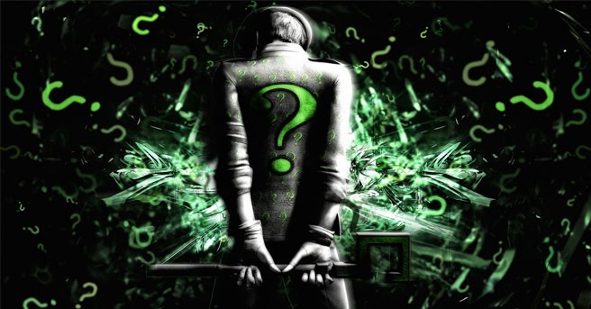

Cuando se habla sobre “Hacking” o se menciona la palabra “Hacker” normalmente se suele pensar en alguien que tiene profundos conocimientos sobre máquinas que realizan funciones de computo y que, además, son personas que realizan cosas “imposibles” para el resto de mortales, habitualmente también se relacionan con personas que se dedican a realizar estafas a gran escala sobre bancos y/o grandes multinacionales, eso para la sociedad moderna, es un hacker. Aunque las lineas anteriores resulten molestas y muy desagradables, la realidad es que la cultura del Hacking se encuentra distorsionada por la sociedad y se ha ido perdiendo poco a poco la esencia de lo que significa realmente la palabra “Hacker”. Esto se debe principalmente a malas películas y representaciones aun peores de los medios de comunicación/manipulación donde no se diferencia entre un delincuente y un hacker, en muchos casos también se les llama “piratas” siendo un termino, a mi gusto, muy agresivo y poco objetivo. Richard Stallman, fundador de la FSF (Free Software Foundation) ha expresado enérgicamente su opinión sobre términos como el anterior, indicando que la comunidad de Software Libre y algunos de los mas destacados Hackers no son “piratas”, ni nada que se le parezca, la definición de un pirata es la de una persona que roba, asesina y comete delitos que atentan contra los derechos fundamentales de cualquier ser humano, algo que se encuentra muy alejado de lo que es realmente un hacker. Entonces, Qué es un hacker? Un hacker en el ámbito de la informática, es una persona apasionada, curiosa, dedicada, LIBRE, comprometida con el aprendizaje y con enormes deseos de mejorar sus habilidades y conocimientos. En muchos casos, no solamente en el área de la informática, el espíritu de esta cultura se extiende a cualquier área del conocimiento humano donde la creatividad y la curiosidad son importantes. Existen diferentes clasificaciones de “Hackers” en la medida que esta cultura se ha ido consolidando y dando a conocer, estas son: Black Hats: Un Black Hat, es una clase de hacker dedicada a la obtención y explotación de vulnerabilidades en sistemas de información, bases de datos, redes informáticas, sistemas operativos, determinados productos de software, etc. Por lo tanto son también conocidos como atacantes de sistemas y expertos en romper la seguridad de sistemas para diversos fines (normalmente en busca de sus propios beneficios). White Hats: Un white hat es una clase de hacker dedicado a la corrección de vulnerabilidades de software, definición de metodologías, medidas de seguridad y defensa de sistemas por medio de distintas herramientas, son aquellas personas que se dedican a la seguridad en aplicaciones, sistemas operativos y protección de datos sensibles, garantizando de esta forma la confidencialidad de la información de los usuarios.
